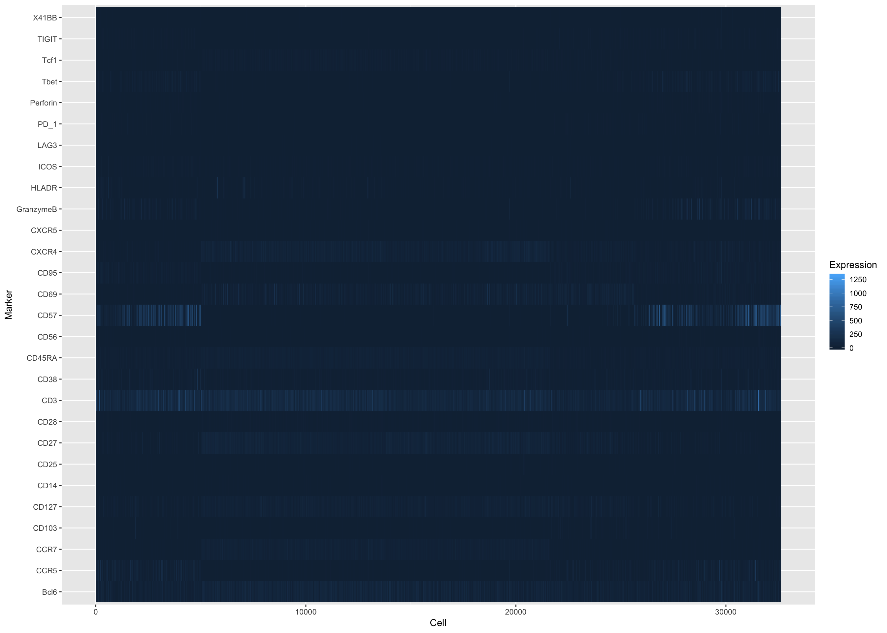
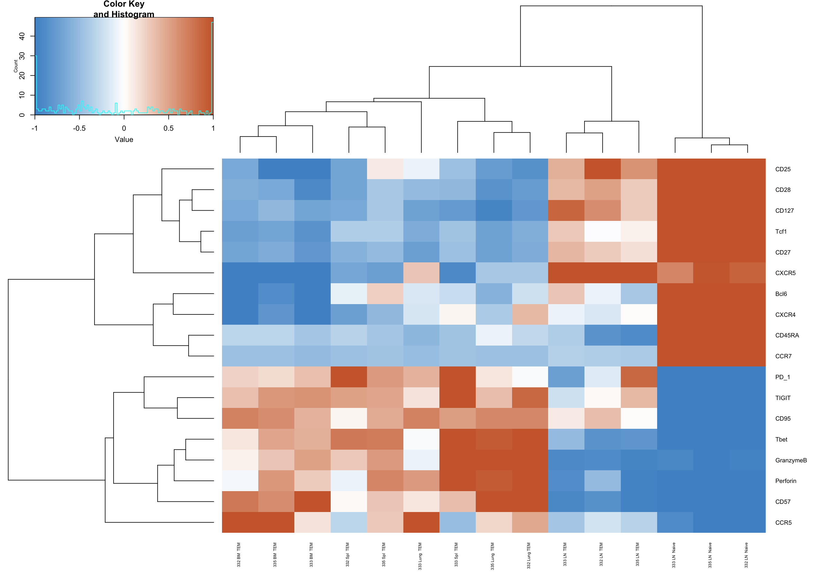

Last updated: 2018-10-12
workflowr checks: (Click a bullet for more information) ✖ R Markdown file: uncommitted changes
The R Markdown file has unstaged changes. To know which version of the R Markdown file created these results, you’ll want to first commit it to the Git repo. If you’re still working on the analysis, you can ignore this warning. When you’re finished, you can run wflow_publish to commit the R Markdown file and build the HTML.
✔ Environment: empty
Great job! The global environment was empty. Objects defined in the global environment can affect the analysis in your R Markdown file in unknown ways. For reproduciblity it’s best to always run the code in an empty environment.
✔ Seed:
set.seed(20181011)
The command set.seed(20181011) was run prior to running the code in the R Markdown file. Setting a seed ensures that any results that rely on randomness, e.g. subsampling or permutations, are reproducible.
✔ Session information: recorded
Great job! Recording the operating system, R version, and package versions is critical for reproducibility.
✔ Repository version: cfc868a
wflow_publish or wflow_git_commit). workflowr only checks the R Markdown file, but you know if there are other scripts or data files that it depends on. Below is the status of the Git repository when the results were generated:
Ignored files:
Ignored: .DS_Store
Ignored: .Rapp.history
Ignored: .Rhistory
Ignored: .Rproj.user/
Ignored: analysis/.Rhistory
Ignored: docs/.DS_Store
Unstaged changes:
Modified: analysis/Heatmap.Rmd
| File | Version | Author | Date | Message |
|---|---|---|---|---|
| html | cfc868a | michellemiron | 2018-10-12 | update heatmap html |
| Rmd | ee696c6 | michellemiron | 2018-10-12 | minor edit |
| html | ac2d94c | michellemiron | 2018-10-12 | publish htmls |
| Rmd | 18fb477 | michellemiron | 2018-10-12 | clean up heatmap code |
| html | 6cc5c2b | michellemiron | 2018-10-11 | docs added |
| Rmd | 0f8b394 | michellemiron | 2018-10-11 | adding files |
| Rmd | d555079 | michellemiron | 2018-10-11 | heatmap analysis |
knitr::opts_chunk$set(echo = TRUE, warning = FALSE, message = FALSE,
fig.height = 10, fig.width = 14)
library(dplyr)
library(tidyr)
library(ggplot2)
library(gapminder)
library(magrittr)
library(gplots)In this study I am comparing lymphocyte populations, specifically T cells, that have been isolated form different human tissue and organ sites. In this study the lymphocyte populations I am comparing have been isolated from the following sites: Blood, Bone marrow (BM), Spleen ( Spl), Lung (Lng), and Lung-draining lymph nodes (LLN). Each tissue site was collected from a single individual, and data from multiple individuals will be analyzed here. ###Code book ####Fixed variables
These are variables that do not change because you know them in advance of the experiment, before collecting any data.
Tissue,with four possible values (BM, Spl, LLN, and Lung)
Tissue | Abbreviation
------------- | -------------
Bone Marrow | BM
Spleen | Spl
Lung | Lng
Lymph node | LNIndividual, with three possible values(332,333, 335)
Individual | ID #
------------- | -------
1 | 332
2 | 333
3 | 335T cell subset, with two valuees (MEM, or Naive)
Subset | Abbreviation
--------------- | -------------
Naive T cell | Naive
Memory T cell | TEM###Raw data
In this case the raw data, what gets collected from the machine, needs to be read using another software. I used a paid software called FCS Express. Here I will describe exactly what I did to export the data from this software which I call raw data.
Open the FCS Express software. On the top with all the menu options, click Export. This will open a window which you can need to choose and do the following: 1) name the file you are exporting 2) choose the parameters you want to export ( I exported all and edited the ones i wanted once it was loaded into R) 3) Choose the number of cells you want to export ( I exported 1 million, knowing that was an over-estimate to get all the cells) 4) Choose the “gate” you want to export. These are gates that you have defined in the program that identify the cell populations you are interested. Ie. for my cell types, protein expression of CCR7 and CD45RA identifies TEM and Naive T cells as CCR7-CD45RA- and CCR7+CD45RA+ respectively.
###Steps to get the raw data
Step 1 - take the raw file, run version FCS express (version 6), and do the following steps within the FCS express program.
Step 2 - Concatenate the files using the FCS express data exporting option and make sure to label the file that you are exporting according to the files being merged.
Step 3 - Open the concatenated file and gate on populations of interest.
Step 4 - Export the data on any one given subset using the data export function from FCSexpress, containing expresion level on each individual cell. One file was exported for each cell subset.
This is what the Raw data looks like:
The problem is there is a separate file for each Tissue site (a variable) :
Raw_BM_TEM <- read.csv("data/BM_TEM_D332_333_335_exp2.csv")
Raw_Spl_TEM <- read.csv("data/SPL_TEM_D332_333_335_exp2.csv")
Raw_LN_TEM <- read.csv("data/LLN_TEM_D332_333_335_exp2.csv")
Raw_Lng_TEM <- read.csv("data/Lung_TEM_D332_333_335_exp2.csv")
Raw_LN_Naive <- read.csv("data/LLN_Naive_D332_333_335_exp2.csv")In order to fix this, the next step is to merge the data from each file, which cnotained data on all the cells within on subset (Naive or Memory T cells from a particular tissue), into a database/file with all the data from each cell subset from different tissues together. I call the merged data “tidy” data below.
Tidy data is a uniform way to make data more organized and easier to do statsitics and analysis on. Here I will put the data into the tidy format. This consists of three steps:
1.Only Keep relevant columns in data set:
# A function to keep a subset of columns in the dataframe
# and to fix an aritifact in the File.Identifier column
tidyDataColumns <- function(RawData) {
# Name columns to keep
keeps <- c("Time","CD57","CD28","CD45RA","CD103","Perforin",
"CD127","PD_1","ICOS","CD27","CCR5","Bcl6",
"Tcf1","CD14","CD56","CXCR5","CD69","X41BB","CD25",
"CCR7","CD3","Tbet","CD38","CD95","LAG3",
"CXCR4","HLADR", "TIGIT","GranzymeB",
"File.Identifier")
# The subset of the raw data that contains columns defined above
KeyMarkersdf <- RawData[keeps]
# There is an artifact of the data
# The "File.Identifier" column was generated from the FCSexpress program
# This column is a number 1-12 that is a unique identifier
# The unique identifier tells you what sample the cells are from
# For example, 1 = Bome marrrow from D332, 2= BM from D333
# The key to this identifier is in step 2 of tidy data below
# The artifact is that the he program outputs the File.Identifier number
# as a real number ie. (1.04243) instead of an integer ie. (1)
# Therefore I rounded the File.Identifier column here:
File.ID.Rounded <- round(KeyMarkersdf$File.Identifier, digits=0)
# Take away the non-rounded file identifier
NoFileIDdf <- subset(KeyMarkersdf, select = -c(File.Identifier) )
# Add_Rounded_FileID to the dataframe
NoFileIDdf$File.ID <- File.ID.Rounded
# Rename the dataset
Tidydf <- NoFileIDdf
}
# Apply this function to all data sets
Tidy_BM_TEM <- tidyDataColumns(Raw_BM_TEM)
Tidy_LN_TEM <- tidyDataColumns(Raw_LN_TEM)
Tidy_Spl_TEM <- tidyDataColumns(Raw_Spl_TEM)
Tidy_Lung_TEM <- tidyDataColumns(Raw_Lng_TEM)
Tidy_LN_Naive <- tidyDataColumns(Raw_LN_Naive)Remember that for this data set, the tissue varibale can still be disintuigshed by the file ID column. However the subset Variable cannot, So i will add this variable to each data set:
Add a column that says subset name as a new variable:
Tidy_BM_TEM["Subset"] <- "TEM"
Tidy_LN_Naive["Subset"] <- "Naive"
Tidy_LN_TEM["Subset"] <- "TEM"
Tidy_Lung_TEM["Subset"] <- "TEM"
Tidy_Spl_TEM["Subset"] <- "TEM" And now combine each data set by adding new rows:
TidyMasterData <- do.call( "rbind", list(Tidy_BM_TEM,
Tidy_LN_Naive,Tidy_LN_TEM,
Tidy_Spl_TEM, Tidy_Lung_TEM))The “File.Identifier” column has a key which reveals what variables they represent:
#add tissue and donor column
TidyMasterData["Tissue"] <- NA
TidyMasterData["Donor"] <- NA
#Here is the key for what the File.ID column is
File.Identifier_Key <- read.csv("data/File Identifier key.csv")
File.Identifier_Key File.Identifier Tissue Donor
1 1 BM 332
2 2 BM 333
3 3 BM 335
4 4 LN 332
5 5 LN 333
6 6 LN 335
7 7 Spl 332
8 8 Spl 333
9 9 Spl 335
10 10 Lung 332
11 11 Lung 333
12 12 Lung 335#Use the File.Identifier Key to label the table for the correct variables
#associated with the observations
for (i in 1:length(File.Identifier_Key[,1])) {
TidyMasterData$Tissue[TidyMasterData$File.ID==i] <- as.character(
File.Identifier_Key$Tissue[i])
TidyMasterData$Donor[TidyMasterData$File.ID==i] <- File.Identifier_Key$Donor[i]
}
#sample_n(TidyMasterData, 10)Now to fix order of the columns so that the fixed variables ( File.ID, Subset, Tissue, and Donor) are first, and the oberserved variables (Protein names like CD57, T-bet , etc. are next). Here we will also remove the Time and File.ID column since those are no longer needed.
#Remove columns that are not needed by their number in the dataframe
TidyData <- TidyMasterData[,c(33,32,31,2:29)]
#sample_n(TidyData, 10)Time to make the last changes to make tidy data. Let’s add a column to be a unique identifier for each cell number
This will turn all the marker variables into rows instead of columns
Now we can plot this easily using ggplot. This is if you want to plot values of individual cells:

| Version | Author | Date |
|---|---|---|
| 6cc5c2b | michellemiron | 2018-10-11 |
#used this tutorial: http://stat545.com/block023_dplyr-do.html
#this function allows multiple pipes to use with dplyr
meanDB <- tidy %>%
group_by(Donor,Tissue, Subset, Marker) %>%
summarize(meanExpression = mean(Expression))
#and Z score of this data
ZscoreDB <- meanDB %>%
group_by(Donor,Marker) %>%
mutate(z_score = scale(meanExpression))
ZscoreDB <- as.data.frame(ZscoreDB)
meanZscoredf <- ZscoreDB#create unique name for each sample type
Lets first get the data “untidy” so it’s easier to use heatmap.2
Zscoredf <- MeanZscore_SampleIDdf[,c(4,6,7)]
ZscoreforHeatmap <- spread(Zscoredf, Marker, z_score)
ZscoreforHeatmap_justValues <- ZscoreforHeatmap[,-c(1)]
#name rows of the df for heatmap plotting so labels showup
rownames(ZscoreforHeatmap_justValues) <- ZscoreforHeatmap[,1]
#graph heatmap
#going to try following this [heatmap #tutorial](http://varianceexplained.org/r/love-actually-network/)
#color cheat sheet https://www.nceas.ucsb.edu/~frazier/RSpatialGuides/colorPaletteCheatsheet.pdf
colnames(ZscoreforHeatmap_justValues) [1] "Bcl6" "CCR5" "CCR7" "CD103" "CD127"
[6] "CD14" "CD25" "CD27" "CD28" "CD3"
[11] "CD38" "CD45RA" "CD56" "CD57" "CD69"
[16] "CD95" "CXCR4" "CXCR5" "GranzymeB" "HLADR"
[21] "ICOS" "LAG3" "PD_1" "Perforin" "Tbet"
[26] "Tcf1" "TIGIT" "X41BB" SelectZscores <-ZscoreforHeatmap_justValues[,-c(4,6,10,11,13,15,20,21,22,28)]
my_palette <- colorRampPalette(c("steelblue3", "white", "sienna3"))(n = 100)
heatmap.2(as.matrix(t(SelectZscores)),trace="none",col=my_palette,cexRow=0.75, cexCol=0.5, breaks=c(seq(-1,1,0.02)))
R version 3.4.4 (2018-03-15)
Platform: x86_64-apple-darwin15.6.0 (64-bit)
Running under: macOS Sierra 10.12.6
Matrix products: default
BLAS: /Library/Frameworks/R.framework/Versions/3.4/Resources/lib/libRblas.0.dylib
LAPACK: /Library/Frameworks/R.framework/Versions/3.4/Resources/lib/libRlapack.dylib
locale:
[1] en_US.UTF-8/en_US.UTF-8/en_US.UTF-8/C/en_US.UTF-8/en_US.UTF-8
attached base packages:
[1] stats graphics grDevices utils datasets methods base
other attached packages:
[1] bindrcpp_0.2.2 gplots_3.0.1 magrittr_1.5 gapminder_0.3.0
[5] ggplot2_3.0.0 tidyr_0.8.0 dplyr_0.7.4
loaded via a namespace (and not attached):
[1] Rcpp_0.12.16 compiler_3.4.4 pillar_1.2.2
[4] git2r_0.21.0 plyr_1.8.4 workflowr_1.1.1
[7] bindr_0.1.1 bitops_1.0-6 R.methodsS3_1.7.1
[10] R.utils_2.6.0 tools_3.4.4 digest_0.6.15
[13] evaluate_0.10.1 tibble_1.4.2 gtable_0.2.0
[16] pkgconfig_2.0.1 rlang_0.2.0 yaml_2.1.19
[19] withr_2.1.2 stringr_1.3.0 knitr_1.20
[22] caTools_1.17.1 gtools_3.5.0 tidyselect_0.2.4
[25] rprojroot_1.3-2 grid_3.4.4 glue_1.2.0
[28] R6_2.2.2 rmarkdown_1.9 gdata_2.18.0
[31] purrr_0.2.4 whisker_0.3-2 backports_1.1.2
[34] scales_1.0.0 htmltools_0.3.6 assertthat_0.2.0
[37] colorspace_1.3-2 labeling_0.3 KernSmooth_2.23-15
[40] stringi_1.2.2 lazyeval_0.2.1 munsell_0.5.0
[43] R.oo_1.22.0 This reproducible R Markdown analysis was created with workflowr 1.1.1